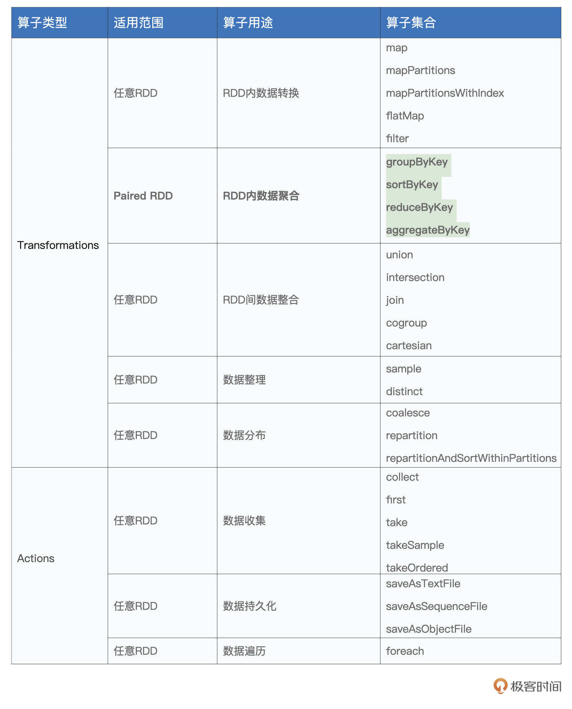
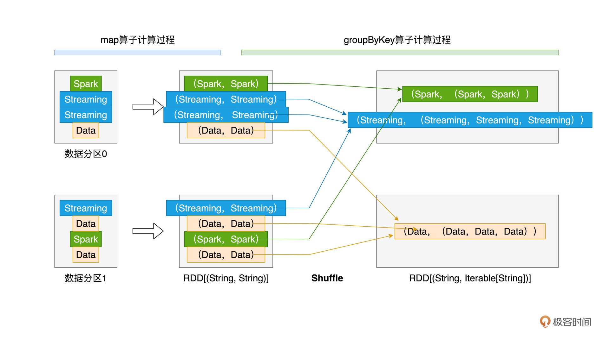
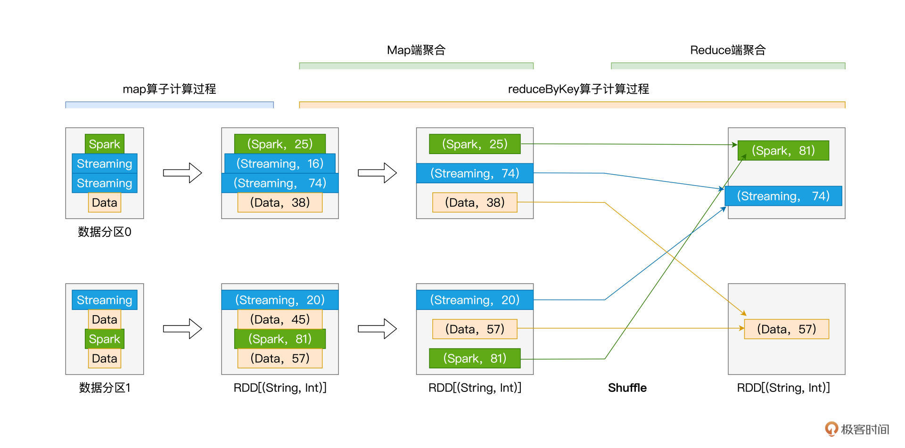
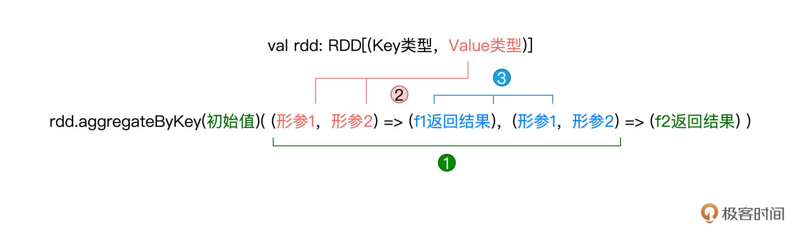
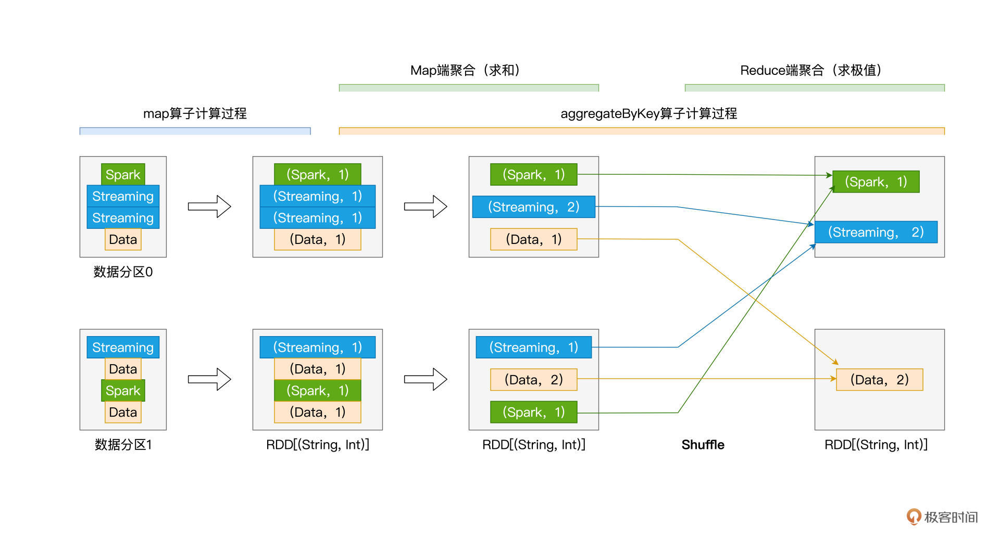

- 00 开篇词 入门Spark，你需要学会“三步走”.md.html
- 01 Spark：从“大数据的Hello World”开始.md.html
- 02 RDD与编程模型：延迟计算是怎么回事？.md.html
- 03 RDD常用算子（一）：RDD内部的数据转换.md.html
- 04 进程模型与分布式部署：分布式计算是怎么回事？.md.html
- 05 调度系统：如何把握分布式计算的精髓？.md.html
- 06 Shuffle管理：为什么Shuffle是性能瓶颈？.md.html
- 07 RDD常用算子（二）：Spark如何实现数据聚合？.md.html
- 08 内存管理：Spark如何使用内存？.md.html
- 09 RDD常用算子（三）：数据的准备、重分布与持久化.md.html
- 10 广播变量 & 累加器：共享变量是用来做什么的？.md.html
- 11 存储系统：数据到底都存哪儿了？.md.html
- 12 基础配置详解：哪些参数会影响应用程序稳定性？.md.html
- 13 Spark SQL：让我们从“小汽车摇号分析”开始.md.html
- 14 台前幕后：DataFrame与Spark SQL的由来.md.html
- 15 数据源与数据格式：DataFrame从何而来？.md.html
- 16 数据转换：如何在DataFrame之上做数据处理？.md.html
- 17 数据关联：不同的关联形式与实现机制该怎么选？.md.html
- 18 数据关联优化：都有哪些Join策略，开发者该如何取舍？.md.html
- 19 配置项详解：哪些参数会影响应用程序执行性能？.md.html
- 20 Hive + Spark强强联合：分布式数仓的不二之选.md.html
- 21 Spark UI（上）：如何高效地定位性能问题？.md.html
- 22 Spark UI（下）：如何高效地定位性能问题？.md.html
- 23 Spark MLlib：从“房价预测”开始.md.html
- 24 特征工程（上）：有哪些常用的特征处理函数？.md.html
- 25 特征工程（下）：有哪些常用的特征处理函数？.md.html
- 26 模型训练（上）：决策树系列算法详解.md.html
- 27 模型训练（中）：回归、分类和聚类算法详解.md.html
- 28 模型训练（下）：协同过滤与频繁项集算法详解.md.html
- 29 Spark MLlib Pipeline：高效开发机器学习应用.md.html
- 30 Structured Streaming：从“流动的Word Count”开始.md.html
- 31 新一代流处理框架：Batch mode和Continuous mode哪家强？.md.html
- 32 Window操作&Watermark：流处理引擎提供了哪些优秀机制？.md.html
- 33 流计算中的数据关联：流与流、流与批.md.html
- 34 Spark + Kafka：流计算中的“万金油”.md.html
- 用户故事 小王：保持空杯心态，不做井底之蛙.md.html
- 结束语 进入时间裂缝，持续学习.md.html
- 捐赠
07 RDD常用算子（二）：Spark如何实现数据聚合？
你好，我是吴磊。
积累了一定的理论基础之后，今天我们继续来学习RDD常用算子。在[RDD常用算子（一）]那一讲，我们讲了四个算子map、mapPartitions、flatMap和filter，同时留了这样一道思考题：“这些算子之间，有哪些共同点？”
今天我们就来揭晓答案。首先，在功能方面，这4个算子都用于RDD内部的数据转换，而学习过Shuffle的工作原理之后，我们不难发现，这4个算子当中，没有任何一个算子，会引入Shuffle计算。
而今天我们要学习的几个算子则恰恰相反，它们都会引入繁重的Shuffle计算。这些算子分别是groupByKey、reduceByKey、aggregateByKey和sortByKey，也就是表格中加粗的部分。
我们知道，在数据分析场景中，典型的计算类型分别是分组、聚合和排序。而groupByKey、reduceByKey、aggregateByKey和sortByKey这些算子的功能，恰恰就是用来实现分组、聚合和排序的计算逻辑。

尽管这些算子看上去相比其他算子的适用范围更窄，也就是它们只能作用（Apply）在Paired RDD之上，所谓Paired RDD，它指的是元素类型为（Key，Value）键值对的RDD。
但是在功能方面，可以说，它们承担了数据分析场景中的大部分职责。因此，掌握这些算子的用法，是我们能够游刃有余地开发数据分析应用的重要基础。那么接下来，我们就通过一些实例，来熟悉并学习这些算子的用法。
我们先来说说groupByKey，坦白地说，相比后面的3个算子，groupByKey在我们日常开发中的“出镜率”并不高。之所以要先介绍它，主要是为后续的reduceByKey和aggregateByKey这两个重要算子做铺垫。
groupByKey：分组收集
groupByKey的字面意思是“按照Key做分组”，但实际上，groupByKey算子包含两步，即分组和收集。
具体来说，对于元素类型为（Key，Value）键值对的Paired RDD，groupByKey的功能就是对Key值相同的元素做分组，然后把相应的Value值，以集合的形式收集到一起。换句话说，groupByKey会把RDD的类型，由RDD[(Key, Value)]转换为RDD[(Key, Value集合)]。
这么说比较抽象，我们还是用一个小例子来说明groupByKey的用法。还是我们熟知的Word Count，对于分词后的一个个单词，假设我们不再统计其计数，而仅仅是把相同的单词收集到一起，那么我们该怎么做呢？按照老规矩，咱们还是先来给出代码实现：
import org.apache.spark.rdd.RDD
// 以行为单位做分词
val cleanWordRDD: RDD[String] = _ // 完整代码请参考第一讲的Word Count
// 把普通RDD映射为Paired RDD
val kvRDD: RDD[(String, String)] = cleanWordRDD.map(word => (word, word))
// 按照单词做分组收集
val words: RDD[(String, Iterable[String])] = kvRDD.groupByKey()
结合前面的代码可以看到，相比之前的Word Count，我们仅需做两个微小的改动，即可实现新的计算逻辑。第一个改动，是把map算子的映射函数f，由原来的word => （word，1）变更为word => （word，word），这么做的效果，是把kvRDD元素的Key和Value都变成了单词。
紧接着，第二个改动，我们用groupByKey替换了原先的reduceByKey。相比reduceByKey，groupByKey的用法要简明得多。groupByKey是无参函数，要实现对Paired RDD的分组、收集，我们仅需在RDD之上调用groupByKey()即可。
尽管groupByKey的用法非常简单，但它的计算过程值得我们特别关注，下面我用一张示意图来讲解上述代码的计算过程，从而让你更加直观地感受groupByKey可能存在的性能隐患。

从图上可以看出，为了完成分组收集，对于Key值相同、但分散在不同数据分区的原始数据记录，Spark需要通过Shuffle操作，跨节点、跨进程地把它们分发到相同的数据分区。我们之前在[第6讲]中说了，Shuffle是资源密集型计算，对于动辄上百万、甚至上亿条数据记录的RDD来说，这样的Shuffle计算会产生大量的磁盘I/O与网络I/O开销，从而严重影响作业的执行性能。
虽然groupByKey的执行效率较差，不过好在它在应用开发中的“出镜率”并不高。原因很简单，在数据分析领域中，分组收集的使用场景很少，而分组聚合才是统计分析的刚需。
为了满足分组聚合多样化的计算需要，Spark提供了3种RDD算子，允许开发者灵活地实现计算逻辑，它们分别是reduceByKey、aggregateByKey和combineByKey。
reduceByKey我们并不陌生，第1讲的Word Count实现就用到了这个算子，aggregateByKey是reduceByKey的“升级版”，相比reduceByKey，aggregateByKey用法更加灵活，支持的功能也更加完备。
接下来，我们先来回顾reduceByKey，然后再对aggregateByKey进行展开。相比aggregateByKey，combineByKey仅在初始化方式上有所不同，因此，我把它留给你作为课后作业去探索。
reduceByKey：分组聚合
reduceByKey的字面含义是“按照Key值做聚合”，它的计算逻辑，就是根据聚合函数f给出的算法，把Key值相同的多个元素，聚合成一个元素。
在[第1讲]Word Count的实现中，我们使用了reduceByKey来实现分组计数：
// 把RDD元素转换为（Key，Value）的形式
val kvRDD: RDD[(String, Int)] = cleanWordRDD.map(word => (word, 1))
// 按照单词做分组计数
val wordCounts: RDD[(String, Int)] = kvRDD.reduceByKey((x: Int, y: Int) => x + y)
重温上面的这段代码，你有没有觉得reduceByKey与之前讲过的map、filter这些算子有一些相似的地方？没错，给定处理函数f，它们的用法都是“算子(f)”。只不过对于map来说，我们把f称作是映射函数，对filter来说，我们把f称作判定函数，而对于reduceByKey，我们把f叫作聚合函数。
在上面的代码示例中，reduceByKey的聚合函数是匿名函数：(x, y) => x + y。与map、filter等算子的用法一样，你也可以明确地定义带名函数f，然后再用reduceByKey(f)的方式实现同样的计算逻辑。
需要强调的是，给定RDD[(Key类型，Value类型)]，聚合函数f的类型，必须是（Value类型，Value类型） => （Value类型）。换句话说，函数f的形参，必须是两个数值，且数值的类型必须与Value的类型相同，而f的返回值，也必须是Value类型的数值。
咱们不妨再举一个小例子，让你加深对于reduceByKey算子的理解。
接下来，我们把Word Count的计算逻辑，改为随机赋值、提取同一个Key的最大值。也就是在kvRDD的生成过程中，我们不再使用映射函数word => (word, 1)，而是改为word => (word, 随机数)，然后再使用reduceByKey算子来计算同一个word当中最大的那个随机数。
你可以先停下来，花点时间想一想这个逻辑该怎么实现，然后再来参考下面的代码：
import scala.util.Random._
// 把RDD元素转换为（Key，Value）的形式
val kvRDD: RDD[(String, Int)] = cleanWordRDD.map(word => (word, nextInt(100)))
// 显示定义提取最大值的聚合函数f
def f(x: Int, y: Int): Int = {
return math.max(x, y)
}
// 按照单词提取最大值
val wordCounts: RDD[(String, Int)] = kvRDD.reduceByKey(f)
观察上面的代码片段，不难发现，reduceByKey算子的用法还是比较简单的，只需要先定义好聚合函数f，然后把它传给reduceByKey算子就行了。那么在运行时，上述代码的计算又是怎样的一个过程呢？
我把reduceByKey的计算过程抽象成了下图：

从图中你可以看出来，尽管reduceByKey也会引入Shuffle，但相比groupByKey以全量原始数据记录的方式消耗磁盘与网络，reduceByKey在落盘与分发之前，会先在Shuffle的Map阶段做初步的聚合计算。
比如，在数据分区0的处理中，在Map阶段，reduceByKey把Key同为Streaming的两条数据记录聚合为一条，聚合逻辑就是由函数f定义的、取两者之间Value较大的数据记录，这个过程我们称之为“Map端聚合”。相应地，数据经由网络分发之后，在Reduce阶段完成的计算，我们称之为“Reduce端聚合”。
你可能会说：“做了Map聚合又能怎样呢？相比groupByKey，reduceByKey带来的性能收益并不算明显呀！”确实，就上面的示意图来说，我们很难感受到reduceByKey带来的性能收益。不过，量变引起质变，在工业级的海量数据下，相比groupByKey，reduceByKey通过在Map端大幅削减需要落盘与分发的数据量，往往能将执行效率提升至少一倍。
应该说，对于大多数分组&聚合的计算需求来说，只要设计合适的聚合函数f，你都可以使用reduceByKey来实现计算逻辑。不过，术业有专攻，reduceByKey算子的局限性，在于其Map阶段与Reduce阶段的计算逻辑必须保持一致，这个计算逻辑统一由聚合函数f定义。当一种计算场景需要在两个阶段执行不同计算逻辑的时候，reduceByKey就爱莫能助了。
比方说，还是第1讲的Word Count，我们想对单词计数的计算逻辑做如下调整：
- 在Map阶段，以数据分区为单位，计算单词的加和；
- 而在Reduce阶段，对于同样的单词，取加和最大的那个数值。
显然，Map阶段的计算逻辑是sum，而Reduce阶段的计算逻辑是max。对于这样的业务需求，reduceByKey已无用武之地，这个时候，就轮到aggregateByKey这个算子闪亮登场了。
aggregateByKey：更加灵活的聚合算子
老规矩，算子的介绍还是从用法开始。相比其他算子，aggregateByKey算子的参数比较多。要在Paired RDD之上调用aggregateByKey，你需要提供一个初始值，一个Map端聚合函数f1，以及一个Reduce端聚合函数f2，aggregateByKey的调用形式如下所示：
val rdd: RDD[(Key类型，Value类型)] = _
rdd.aggregateByKey(初始值)(f1, f2)
初始值可以是任意数值或是字符串，而聚合函数我们也不陌生，它们都是带有两个形参和一个输出结果的普通函数。就这3个参数来说，比较伤脑筋的，是它们之间的类型需要保持一致，具体来说：
- 初始值类型，必须与f2的结果类型保持一致；
- f1的形参类型，必须与Paired RDD的Value类型保持一致；
- f2的形参类型，必须与f1的结果类型保持一致。
不同类型之间的一致性描述起来比较拗口，咱们不妨结合示意图来加深理解：

熟悉了aggregateByKey的用法之后，接下来，我们用aggregateByKey这个算子来实现刚刚提到的“先加和，再取最大值”的计算逻辑，代码实现如下所示：
// 把RDD元素转换为（Key，Value）的形式
val kvRDD: RDD[(String, Int)] = cleanWordRDD.map(word => (word, 1))
// 显示定义Map阶段聚合函数f1
def f1(x: Int, y: Int): Int = {
return x + y
}
// 显示定义Reduce阶段聚合函数f2
def f2(x: Int, y: Int): Int = {
return math.max(x, y)
}
// 调用aggregateByKey，实现先加和、再求最大值
val wordCounts: RDD[(String, Int)] = kvRDD.aggregateByKey(0) (f1, f2)
怎么样？是不是很简单？结合计算逻辑的需要，我们只需要提前定义好两个聚合函数，同时保证参数之间的类型一致性，然后把初始值、聚合函数传入aggregateByKey算子即可。按照惯例，我们还是通过aggregateByKey在运行时的计算过程，来帮你深入理解算子的工作原理：

不难发现，在运行时，与reduceByKey相比，aggregateByKey的执行过程并没有什么两样，最主要的区别，还是Map端聚合与Reduce端聚合的计算逻辑是否一致。值得一提的是，与reduceByKey一样，aggregateByKey也可以通过Map端的初步聚合来大幅削减数据量，在降低磁盘与网络开销的同时，提升Shuffle环节的执行性能。
sortByKey：排序
在这一讲的最后，我们再来说说sortByKey这个算子，顾名思义，它的功能是“按照Key进行排序”。给定包含（Key，Value）键值对的Paired RDD，sortByKey会以Key为准对RDD做排序。算子的用法比较简单，只需在RDD之上调用sortByKey()即可：
val rdd: RDD[(Key类型，Value类型)] = _
rdd.sortByKey()
在默认的情况下，sortByKey按照Key值的升序（Ascending）对RDD进行排序，如果想按照降序（Descending）来排序的话，你需要给sortByKey传入false。总结下来，关于排序的规则，你只需要记住如下两条即可：
- 升序排序：调用sortByKey()、或者sortByKey(true)；
- 降序排序：调用sortByKey(false)。
重点回顾
今天这一讲，我们介绍了数据分析场景中常用的4个算子，它们分别是groupByKey、reduceByKey、aggregateByKey和sortByKey，掌握这些算子的用法与原理，将为你游刃有余地开发数据分析应用打下坚实基础。
关于这些算子，你首先需要了解它们之间的共性。一来，这4个算子的作用范围，都是Paired RDD；二来，在计算的过程中，它们都会引入Shuffle。而Shuffle往往是Spark作业执行效率的瓶颈，因此，在使用这4个算子的时候，对于它们可能会带来的性能隐患，我们要做到心中有数。
再者，你需要掌握每一个算子的具体用法与工作原理。groupByKey是无参算子，你只需在RDD之上调用groupByKey()即可完成对数据集的分组和收集。但需要特别注意的是，以全量原始数据记录在集群范围内进行落盘与网络分发，会带来巨大的性能开销。因此，除非必需，你应当尽量避免使用groupByKey算子。
利用聚合函数f，reduceByKey可以在Map端进行初步聚合，大幅削减需要落盘与分发的数据量，从而在一定程度上能够显著提升Shuffle计算的执行效率。对于绝大多数分组&聚合的计算需求，只要聚合函数f设计得当，reduceByKey都能实现业务逻辑。reduceByKey也有其自身的局限性，那就是其Map阶段与Reduce阶段的计算逻辑必须保持一致。
对于Map端聚合与Reduce端聚合计算逻辑不一致的情况，aggregateByKey可以很好地满足这样的计算场景。aggregateByKey的用法是aggregateByKey(初始值)(Map端聚合函数，Reduce端聚合函数)，对于aggregateByKey的3个参数，你需要保证它们之间类型的一致性。一旦类型一致性得到满足，你可以通过灵活地定义两个聚合函数，来翻着花样地进行各式各样的数据分析。
最后，对于排序类的计算需求，你可以通过调用sortByKey来进行实现。sortByKey支持两种排序方式，在默认情况下，sortByKey()按Key值的升序进行排序，sortByKey()与sortByKey(true)的效果是一样的。如果想按照降序做排序，你只需要调用sortByKey(false)即可。
到此为止，我们一起学习了RDD常用算子的前两大类，也就是数据转换和数据聚合。在日常的开发工作中，应该说绝大多数的业务需求，都可以通过这些算子来实现。
因此恭喜你，毫不夸张地说，学习到这里，你的一只脚已经跨入了Spark分布式应用开发的大门。不过，我们还不能骄傲，“学会”和“学好”之间还有一定的距离，在接下来的时间里，期待你和我一起继续加油，真正做到吃透Spark、玩转Spark！
每课一练
这一讲到这里就要结束了，今天的练习题是这样的：
学习过reduceByKey和aggregateByKey之后，你能说说它们二者之间的联系吗？你能用aggregateByKey来实现reduceByKey的功能吗？
欢迎你分享你的答案。如果这一讲对你有帮助，也欢迎你把这一讲分享给自己的朋友，和他一起来讨论一下本讲的练习题，我们下一讲再见。
© 2019 - 2023 Liangliang Lee. Powered by gin and hexo-theme-book.